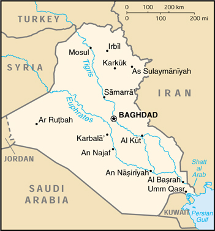

{kind=link}


| Iraq |
|
|  | |
| Introduction |
Background: Formerly part of the Ottoman Empire, Iraq became an independent kingdom in 1932. A "republic" was proclaimed in 1958, but in actuality a series of military strongmen have ruled the country since then, the latest being SADDAM Husayn. Territorial disputes with Iran led to an inconclusive and costly eight-year war (1980-1988). In August 1990 Iraq seized Kuwait, but was expelled by US-led, UN coalition forces during January-February 1991. The victors did not occupy Iraq, however, thus allowing the regime to stay in control. Following Kuwait's liberation, the UN Security Council (UNSC) required Iraq to scrap all weapons of mass destruction and long-range missiles and to allow UN verification inspections. UN trade sanctions remain in effect due to incomplete Iraqi compliance with relevant UNSC resolutions.
| Geography |
Location: Middle East, bordering the Persian Gulf, between Iran and Kuwait
Geographic coordinates: 33 00 N, 44 00 E
Map references: Middle East
Area:
total:
437,072 sq km
land:
432,162 sq km
water:
4,910 sq km
Area - comparative: slightly more than twice the size of Idaho
Land boundaries:
total:
3,631 km
border countries:
Iran 1,458 km, Jordan 181 km, Kuwait 242 km, Saudi Arabia 814 km, Syria 605 km, Turkey 331 km
Coastline: 58 km
Maritime claims:
continental shelf:
not specified
territorial sea:
12 nm
Climate: mostly desert; mild to cool winters with dry, hot, cloudless summers; northern mountainous regions along Iranian and Turkish borders experience cold winters with occasionally heavy snows that melt in early spring, sometimes causing extensive flooding in central and southern Iraq
Terrain: mostly broad plains; reedy marshes along Iranian border in south with large flooded areas; mountains along borders with Iran and Turkey
Elevation extremes:
lowest point:
Persian Gulf 0 m
highest point:
Haji Ibrahim 3,600 m
Natural resources: petroleum, natural gas, phosphates, sulfur
Land use:
arable land:
12%
permanent crops:
0%
permanent pastures:
9%
forests and woodland:
0%
other:
79% (1993 est.)
Irrigated land: 25,500 sq km (1993 est.)
Natural hazards: dust storms, sandstorms, floods
Environment - current issues: government water control projects have drained most of the inhabited marsh areas east of An Nasiriyah by drying up or diverting the feeder streams and rivers; a once sizable population of Shi'a Muslims, who have inhabited these areas for thousands of years, has been displaced; furthermore, the destruction of the natural habitat poses serious threats to the area's wildlife populations; inadequate supplies of potable water; development of Tigris-Euphrates Rivers system contingent upon agreements with upstream riparian Turkey; air and water pollution; soil degradation (salination) and erosion; desertification
Environment - international agreements:
party to:
Law of the Sea, Nuclear Test Ban
signed, but not ratified:
Environmental Modification
| People |
Population: 22,675,617 (July 2000 est.)
Age structure:
0-14 years:
42% (male 4,860,795; female 4,708,453)
15-64 years:
55% (male 6,272,842; female 6,123,188)
65 years and over:
3% (male 331,840; female 378,499) (2000 est.)
Population growth rate: 2.86% (2000 est.)
Birth rate: 35.04 births/1,000 population (2000 est.)
Death rate: 6.4 deaths/1,000 population (2000 est.)
Net migration rate: 0 migrant(s)/1,000 population (2000 est.)
Sex ratio:
at birth:
1.05 male(s)/female
under 15 years:
1.03 male(s)/female
15-64 years:
1.02 male(s)/female
65 years and over:
0.88 male(s)/female
total population:
1.02 male(s)/female (2000 est.)
Infant mortality rate: 62.49 deaths/1,000 live births (2000 est.)
Life expectancy at birth:
total population:
66.53 years
male:
65.54 years
female:
67.56 years (2000 est.)
Total fertility rate: 4.87 children born/woman (2000 est.)
Nationality:
noun:
Iraqi(s)
adjective:
Iraqi
Ethnic groups: Arab 75%-80%, Kurdish 15%-20%, Turkoman, Assyrian or other 5%
Religions: Muslim 97% (Shi'a 60%-65%, Sunni 32%-37%), Christian or other 3%
Languages: Arabic, Kurdish (official in Kurdish regions), Assyrian, Armenian
Literacy:
definition:
age 15 and over can read and write
total population:
58%
male:
70.7%
female:
45% (1995 est.)
| Government |
Country name:
conventional long form:
Republic of Iraq
conventional short form:
Iraq
local long form:
Al Jumhuriyah al Iraqiyah
local short form:
Al Iraq
Data code: IZ
Government type: republic
Capital: Baghdad
Administrative divisions: 18 provinces (muhafazat, singular - muhafazah); Al Anbar, Al Basrah, Al Muthanna, Al Qadisiyah, An Najaf, Arbil, As Sulaymaniyah, At Ta'mim, Babil, Baghdad, Dahuk, Dhi Qar, Diyala, Karbala', Maysan, Ninawa, Salah ad Din, Wasit
Independence: 3 October 1932 (from League of Nations mandate under British administration)
National holiday: Anniversary of the Revolution, 17 July (1968)
Constitution: 22 September 1968, effective 16 July 1970 (provisional constitution); new constitution drafted in 1990 but not adopted
Legal system: based on Islamic law in special religious courts, civil law system elsewhere; has not accepted compulsory ICJ jurisdiction
Suffrage: 18 years of age; universal
Executive branch:
chief of state:
President SADDAM Husayn (since 16 July 1979); Vice President Taha Muhyi al-Din MARUF (since 21 April 1974); Vice President Taha Yasin RAMADAN (since 23 March 1991)
head of government:
Prime Minister SADDAM Husayn (since 29 May 1994); Deputy Prime Minister Tariq Mikhail AZIZ (since NA 1979); Deputy Prime Minister Taha Yasin RAMADAN (since NA May 1994); Deputy Prime Minister Muhammad Hamza al-ZUBAYDI (since NA May 1994)
cabinet:
Council of Ministers
note:
there is also a Revolutionary Command Council or RCC (Chairman SADDAM Husayn, Vice Chairman Izzat IBRAHIM al-Duri) which controls the ruling Ba'th Party, and is the most powerful political entity in the country
elections:
president and vice presidents elected by a two-thirds majority of the Revolutionary Command Council; election last held 17 October 1995 (next to be held NA 2002)
election results:
SADDAM Husayn reelected president; percent of vote - 99%; Taha Muhyi al-Din MARUF and Taha Yasin RAMADAN elected vice presidents; percent of vote - NA
Legislative branch:
unicameral National Assembly or Majlis al-Watani (250 seats; 30 appointed by the president to represent the three northern provinces of Dahuk, Arbil, and As Sulaymaniyah; 220 elected by popular vote; members serve four-year terms)
elections:
last held 24 March 1996 (next to be held NA March 2000)
election results:
percent of vote by party - NA; seats by party - NA
Judicial branch: Court of Cassation
Political parties and leaders: Ba'th Party [SADDAM Husayn, central party leader]
Political pressure groups and leaders: any formal political activity must be sanctioned by the government; opposition to regime from Kurdish groups and southern Shi'a dissidents
International organization participation: ABEDA, ACC, AFESD, AL, AMF, CAEU, CCC, ESCWA, FAO, G-19, G-77, IAEA, IBRD, ICAO, ICRM, IDA, IDB, IFAD, IFC, IFRCS, ILO, IMF, IMO, Inmarsat, Intelsat, Interpol, IOC, ITU, NAM, OAPEC, OIC, OPEC, PCA, UN, UNCTAD, UNESCO, UNIDO, UPU, WFTU, WHO, WIPO, WMO, WToO
Diplomatic representation in the US: none; note - Iraq has an Interest Section in the Algerian Embassy headed by Mr. Akram AL DOURI; address: Iraqi Interests Section, Algerian Embassy, 2118 Kalorama Road NW, Washington, DC 20008; telephone: [1] (202) 265-2800; FAX: [1] (202) 667-2174
Diplomatic representation from the US: none; note - the US has an Interests Section in the Polish Embassy in Baghdad; address: P. O. Box 2051 Hay Babel, Baghdad; telephone: [964] (1) 718-9267; FAX: [964] (1) 718-9297
Flag description: three equal horizontal bands of red (top), white, and black with three green five-pointed stars in a horizontal line centered in the white band; the phrase ALLAHU AKBAR (God is Great) in green Arabic script - Allahu to the right of the middle star and Akbar to the left of the middle star - was added in January 1991 during the Persian Gulf crisis; similar to the flag of Syria which has two stars but no script and the flag of Yemen which has a plain white band; also similar to the flag of Egypt which has a symbolic eagle centered in the white band
| Economy |
Economy - overview: Iraq's economy is dominated by the oil sector, which has traditionally provided about 95% of foreign exchange earnings. In the 1980s, financial problems caused by massive expenditures in the eight-year war with Iran and damage to oil export facilities by Iran led the government to implement austerity measures, borrow heavily, and later reschedule foreign debt payments; Iraq suffered economic losses of at least $100 billion from the war. After the end of hostilities in 1988, oil exports gradually increased with the construction of new pipelines and restoration of damaged facilities. Iraq's seizure of Kuwait in August 1990, subsequent international economic sanctions, and damage from military action by an international coalition beginning in January 1991 drastically reduced economic activity. The government's policies of supporting large military and internal security forces and of allocating resources to key supporters of the regime have exacerbated shortages. The implementation of the UN's oil-for-food program in December 1996 has helped improve economic conditions. For the first six six-month phases of the program, Iraq was allowed to export limited amounts of oil in exchange for food, medicine, and other humanitarian goods. In December 1999, the UN Security Council authorized Iraq to export under the oil-for-food program as much oil as required to meet humanitarian needs. Oil exports are now about three-quarters their prewar level. Per capita food imports have increased significantly, while medical supplies and health care services are steadily improving. Per capita output and living standards are still well below the prewar level, but any estimates have a wide range of error.
GDP: purchasing power parity - $59.9 billion (1999 est.)
GDP - real growth rate: 13% (1999 est.)
GDP - per capita: purchasing power parity - $2,700 (1999 est.)
GDP - composition by sector:
agriculture:
6%
industry:
13%
services:
81% (1993 est.)
Population below poverty line: NA%
Household income or consumption by percentage share:
lowest 10%:
NA%
highest 10%:
NA%
Inflation rate (consumer prices): 135% (1999 est.)
Labor force: 4.4 million (1989)
Labor force - by occupation: agriculture NA%, industry NA%, services NA%
Unemployment rate: NA%
Budget:
revenues:
$NA
expenditures:
$NA, including capital expenditures of $NA
Industries: petroleum, chemicals, textiles, construction materials, food processing
Industrial production growth rate: NA%
Electricity - production: 28.4 billion kWh (1998)
Electricity - production by source:
fossil fuel:
97.89%
hydro:
2.11%
nuclear:
0%
other:
0% (1998)
Electricity - consumption: 26.412 billion kWh (1998)
Electricity - exports: 0 kWh (1998)
Electricity - imports: 0 kWh (1998)
Agriculture - products: wheat, barley, rice, vegetables, dates, cotton; cattle, sheep
Exports: $12.7 billion (1999 est.)
Exports - commodities: crude oil
Exports - partners: Russia, France, China (1999)
Imports: $8.9 billion (1999 est.)
Imports - commodities: food, medicine, manufactures
Imports - partners: Russia, France, Egypt, Vietnam (1999)
Debt - external: $130 billion (1999 est.)
Economic aid - recipient: $327.5 million (1995)
Currency: 1 Iraqi dinar (ID) = 1,000 fils
Exchange rates: Iraqi dinars (ID) per US$1 - 0.3109 (fixed official rate since 1982); black market rate - Iraqi dinars (ID) per US$1 - 1,900 (December 1999), 1,815 (December 1998), 1,530 (December 1997), 3,000 (December 1995); subject to wide fluctuations
Fiscal year: calendar year
| Communications |
Telephones - main lines in use: 675,000 (1995)
Telephones - mobile cellular: NA
Telephone system:
reconstitution of damaged telecommunication facilities began after the Gulf war; most damaged facilities have been rebuilt
domestic:
the network consists of coaxial cables and microwave radio relay links
international:
satellite earth stations - 2 Intelsat (1 Atlantic Ocean and 1 Indian Ocean), 1 Intersputnik (Atlantic Ocean region) and 1 Arabsat (inoperative); coaxial cable and microwave radio relay to Jordan, Kuwait, Syria, and Turkey; Kuwait line is probably nonoperational
Radio broadcast stations: AM 19 (5 are inactive), FM 51, shortwave 4 (1998)
Radios: 4.85 million (1997)
Television broadcast stations: 13 (1997)
Televisions: 1.75 million (1997)
Internet Service Providers (ISPs): 1 (1999)
| Transportation |
Railways:
total:
2,032 km
standard gauge:
2,032 km 1.435-m gauge
Highways:
total:
45,550 km
paved:
38,400 km
unpaved:
7,150 km (1996 est.)
Waterways: 1,015 km; Shatt al Arab is usually navigable by maritime traffic for about 130 km; channel has been dredged to 3 m and is in use; Tigris and Euphrates Rivers have navigable sections for shallow-draft watercraft; Shatt al Basrah canal was navigable by shallow-draft craft before closing in 1991 because of the Gulf war
Pipelines: crude oil 4,350 km; petroleum products 725 km; natural gas 1,360 km
Ports and harbors: Umm Qasr, Khawr az Zubayr, and Al Basrah have limited functionality
Merchant marine:
total:
32 ships (1,000 GRT or over) totaling 606,227 GRT/1,067,770 DWT
ships by type:
cargo 14, passenger 1, passenger/cargo 1, petroleum tanker 13, refrigerated cargo 1, roll-on/roll-off 2 (1999 est.)
Airports: 113 (1999 est.)
Airports - with paved runways:
total:
80
over 3,047 m:
20
2,438 to 3,047 m:
39
1,524 to 2,437 m:
4
914 to 1,523 m:
7
under 914 m:
10 (1999 est.)
Airports - with unpaved runways:
total:
33
over 3,047 m:
3
2,438 to 3,047 m:
6
1,524 to 2,437 m:
2
914 to 1,523 m:
10
under 914 m:
12 (1999 est.)
Heliports: 5 (1999 est.)
| Military |
Military branches: Army, Republican Guard, Navy, Air Force, Air Defense Force, Border Guard Force, Fedayeen Saddam
Military manpower - military age: 18 years of age
Military manpower - availability:
males age 15-49:
5,674,990 (2000 est.)
Military manpower - fit for military service:
males age 15-49:
3,176,826 (2000 est.)
Military manpower - reaching military age annually:
males:
266,736 (2000 est.)
Military expenditures - dollar figure: $NA
Military expenditures - percent of GDP: NA%
| Transnational Issues |
Disputes - international: Iran and Iraq restored diplomatic relations in 1990 but are still trying to work out written agreements settling outstanding disputes from their eight-year war concerning border demarcation, prisoners-of-war, and freedom of navigation and sovereignty over the Shatt al Arab waterway; in November 1994, Iraq formally accepted the UN-demarcated border with Kuwait which had been spelled out in Security Council Resolutions 687 (1991), 773 (1993), and 883 (1993); this formally ends earlier claims to Kuwait and to Bubiyan and Warbah islands although the government continues periodic rhetorical challenges; dispute over water development plans by Turkey for the Tigris and Euphrates rivers